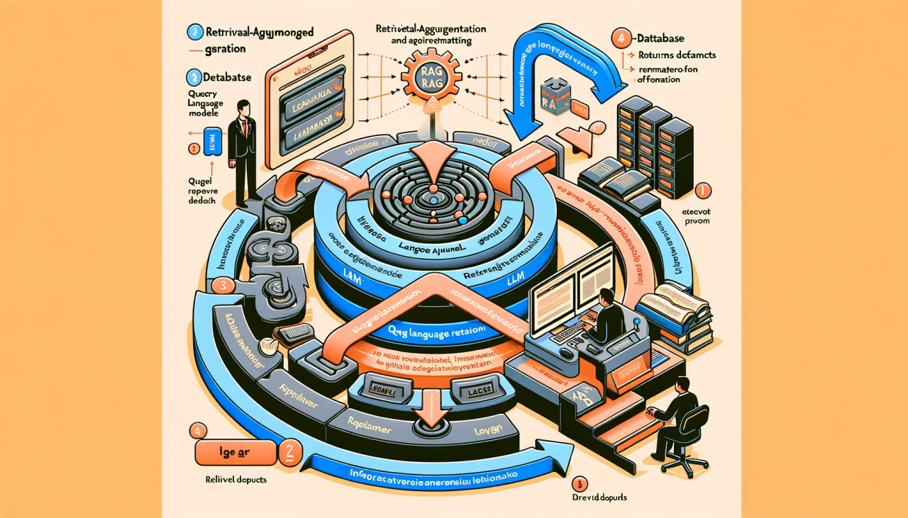

Retrieval Augmented Generation (RAG)#
{kind=link}
LLMs are sophisticated but not without flaws.
Base LLMs struggle with up-to-date knowledge retrieval, contextual depth, environmental sustainability, and biases.
RAG-based LLM applications aim to enhance LLM performance by integrating them with external knowledge sources.
I. Introduction to Large Language Models (LLMs)#
Large Language Models, or LLMs, are the pinnacle of natural language processing technologies, driving the frontier of machine understanding and generation of human language. These models are trained on vast datasets, enabling them to predict, generate, and contextualize text with impressive accuracy. However, despite their capabilities, base LLMs exhibit several limitations.
Limitations of base LLMs#
Lack of external knowledge: Base LLMs are often confined to the information present in their training data, limiting their ability to provide updated or domain-specific information.
Contextual understanding: While LLMs can grasp context over a few paragraphs, their understanding dwindles with longer texts, leading to coherence issues.
Cost of training and environmental impact: The computational power required to train LLMs is immense, raising concerns about their environmental footprint.
Bias and ethical concerns: LLMs can inadvertently propagate biases present in their training data, raising ethical questions about their deployment.
Introduction to RAG-based LLM applications#
To surmount these hurdles, Retrieval-Augmented Generation (RAG) models integrate the generative capabilities of LLMs with a retrieval component, typically a database or knowledge base, that provides up-to-date, relevant information. This approach enriches the LLM’s responses with external data, not only broadening the model’s knowledge but also tailoring its responses to be more specific and accurate. RAG-based applications leverage the strength of LLMs in understanding and generating language while mitigating their informational and contextual limitations.
II. Strategies for Enhanced Performance#
Effective Retrieval is achieved by addressing semantic, vector, granularity, and sparsity issues.
Augmentation Quality hinges on context matching, deduplication, ranking, style consistency, and balanced reliance on external data.
Generation Excellence demands logical consistency, conciseness, specificity, depth, error management, stylistic variety, and contradiction resolution.
The above strategies are foundational to overcoming the challenges inherent in RAG-based LLM applications, leading to more reliable and user-centric AI systems.
Retrieval Problems#
Semantic Ambiguity: Utilize context-aware retrieval mechanisms to discern the correct meaning of ambiguous terms.
Vector Similarity Issues: Implement advanced similarity measures that go beyond cosine similarity to capture deeper semantic relationships.
Granularity Mismatches: Employ retrieval techniques that can adjust the granularity of information, aligning with the specificity of the query.
Vector Space Density: Enhance vector representations to avoid overpopulation in certain regions, which can lead to poor retrieval performance.
Sparse Retrieval Challenges: Leverage techniques like dimensionality reduction and densification to mitigate issues arising from high-dimensional but sparse vectors.
Augmentation Problems#
Mismatched Context: Develop algorithms to ensure that the retrieved content aligns with the query context.
Redundancy: Incorporate deduplication strategies to prevent the retrieval of redundant information.
Improper Ranking: Apply ranking algorithms that consider both the relevance and the novelty of the information.
Stylistic Inconsistencies: Use style transfer methods to harmonize the retrieved data with the generated content.
Overreliance on Retrieved Content: Balance the influence of retrieved content with generative creativity to maintain a natural and engaging output.
Generation Problems#
Logical Inconsistencies: Introduce logical validation steps to ensure consistency within the generated content.
Verbosity: Integrate summarization techniques to keep the generated responses concise.
Overgeneralization: Include more fine-tuned models trained on specialized datasets to avoid vague responses.
Lack of Depth: Incorporate mechanisms to prompt deeper dives into topics when necessary.
Error Propagation: Implement error detection and correction mechanisms post-generation.
Stylistic Issues: Train models on a diverse range of styles to improve stylistic variety and appropriateness.
Failure to Reconcile Contradictions: Design systems that can detect and resolve contradictory statements within the generated content.
III. Data Preparation#
Data Standardization: Align all input data to a uniform format and structure for consistent processing.
Entity Clarity: Rigorously resolve and clarify entities to maintain coherence and accuracy in retrieval.
Information Pruning: Systematically remove superfluous data to streamline the retrieval process.
Factuality Assurance: Implement robust validation mechanisms to maintain the integrity of the data used in the RAG system.
The meticulous preparation of data sets the stage for the successful implementation of a RAG-based LLM, ensuring that the system operates on clean, clear, and factual information.
Cleaning and standardizing the data#
Normalization: Convert data into a consistent format, ensuring uniformity in case, date formats, and numerical representations.
Noise Reduction: Remove irrelevant information, such as HTML tags or extraneous punctuation, to reduce noise.
Tokenization: Break text into tokens (e.g., words, phrases) to facilitate processing.
Part-of-Speech Tagging: Annotate tokens with their corresponding part of speech to aid in understanding grammatical structures.
Disambiguating entities and terms#
Entity Resolution: Apply techniques to identify and merge multiple records that refer to the same entity.
Synonym Mapping: Create a synonym dictionary to group different expressions of the same concept.
Contextual Clues: Use surrounding text to resolve the meaning of ambiguous terms.
Knowledge Graphs: Integrate external knowledge graphs to enhance semantic understanding.
Eliminating duplicate or redundant information#
Deduplication: Detect and remove duplicate entries to prevent retrieval of repetitive information.
Redundancy Analysis: Use algorithms to identify and discard information that does not add value to the context.
Ensuring factuality of the data#
Fact-Checking Protocols: Establish rigorous verification processes to validate the truthfulness of the data.
Source Credibility: Prioritize data from credible sources to enhance the reliability of information.
Cross-Referencing: Cross-reference information with multiple sources to ensure consistency and factuality.
IV. Building the RAG Pipeline#
Vector Database Creation: Establishing a rich vector database is critical for effective retrieval.
Efficient Data Handling: Optimizing data loading and syncing is key for up-to-date and responsive systems.
Sophisticated Retrieval: Advanced retrieval methods are essential for providing the most relevant context.
Integrated Generation: Combining LLM generation with retrieved context requires careful balance to achieve natural and accurate outputs.
Continuous Improvement: Implementing feedback loops ensures the RAG system improves over time.
Building the RAG pipeline is a complex task that requires careful consideration of both the retrieval and generation aspects to ensure the system is both accurate and efficient. This foundation is crucial for developing LLM applications that can leverage external information for better performance.
Creating the vector database#
Vectorization: Convert text data into vector representations using models like BERT or GPT-3, capturing semantic meanings in vector space.
Indexing: Implement indexing strategies to efficiently store and retrieve vectors from the database.
Dimensionality Reduction: Apply techniques like PCA or t-SNE to reduce vector dimensions, enhancing computational efficiency without significant loss of information.
Loading the Dataset#
Data Ingestion: Automate the ingestion of new data into the system, ensuring it is vectorized and indexed consistently with existing data.
Batch Processing: Utilize batch processing for handling large datasets, enabling parallel processing and minimizing load times.
Data Syncing: Maintain synchronization mechanisms to keep the dataset current with the latest information updates.
Retrieval process#
Query Analysis: Decompose the user’s query into its semantic components for better matching with the knowledge base.
Search Algorithm: Use advanced search algorithms like k-nearest neighbors (k-NN) to find the most relevant vectors in the database.
Relevance Scoring: Score retrieved documents based on their relevance to the query, using metrics like BM25 or cosine similarity.
Embedding the query and retrieved context#
Query Vectorization: Embed the query into the same vector space as the database to allow for direct comparison.
Context Integration: Combine the embedded query vector with the vectors of the retrieved documents to provide a rich context for the generation process.
Attention Mechanisms: Apply attention models to weigh the importance of different parts of the retrieved context in relation to the query.
Generating a response using the LLM#
Response Formulation: Employ the LLM to generate a coherent and contextually relevant response based on the augmented information.
Feedback Loop: Integrate a feedback mechanism where the quality of the generated response can inform future retrieval and generation processes.
Quality Control: Incorporate human-in-the-loop or automated checks to ensure the response meets quality standards.
V. Scaling and Serving the Application#
Resource Optimization: Balancing computational resources for both retrieval and generation components is key to cost-effective scaling.
Performance Maintenance: As demand grows, maintaining low latency and high throughput is imperative.
Data Scalability: Implement robust data management practices to handle the growth of the underlying knowledge base.
User Demand Management: Develop strategies to manage simultaneous requests efficiently, maintaining a seamless user experience.
Scaling and serving a RAG-based LLM application requires a thoughtful approach to infrastructure, architecture, and system design, ensuring the application can grow and respond to increasing demand while maintaining high performance and reliability.
Challenges of scaling LLM applications#
Resource Intensiveness: LLMs require significant computational resources, which can be exacerbated when combined with retrieval systems.
Latency: Ensuring low latency in retrieval and generation is challenging as the system scales.
Data Management: Managing a rapidly growing knowledge base without compromising performance is crucial.
Concurrency: High user demand can lead to concurrency issues, requiring efficient load balancing.
Designing the application for scalability#
Microservices Architecture: Adopt a microservices approach to allow independent scaling of different components of the RAG system.
Containerization: Use containers (e.g., Docker) for deploying applications to ensure consistency across different environments and ease scaling.
Elastic Computing Resources: Leverage cloud services that can dynamically allocate resources based on demand.
Caching Mechanisms: Implement caching of frequent queries and results to reduce load and improve response times.
Serving the application in a highly scalable and available manner#
Load Balancing: Distribute traffic across multiple servers to ensure no single point of failure and to manage load effectively.
Redundancy: Design the system with redundancy in mind to handle potential outages and maintain availability.
Content Delivery Network (CDN): Use a CDN to serve static content closer to the user, reducing latency.
Monitoring and Autoscaling: Employ monitoring tools to track system performance and automate scaling based on predefined metrics.
VI. Evaluation and Performance Optimization#
Component-Level Analysis: Focus on optimizing each component individually for maximum efficiency.
System-Wide Evaluation: Assess the system as a whole, ensuring it meets the desired performance metrics in real-world scenarios.
Iterative Experimentation: Continuously test and adjust configurations to enhance system performance.
Quality Focused: Prioritize optimizations that directly contribute to the quality and reliability of responses.
Evaluation and performance optimization in RAG-based systems are iterative and ongoing processes. They require a blend of technical assessments, user feedback, and continuous adjustments to meet the evolving demands and expectations of end-users.
Evaluating individual parts of the application#
Retrieval Component Evaluation: Assess the accuracy and relevance of the information retrieved by the system using metrics like precision, recall, and F1 score.
Generation Component Evaluation: Evaluate the language model’s ability to generate coherent, contextually appropriate, and grammatically correct responses. Common metrics include BLEU, ROUGE, and perplexity.
Integration Assessment: Test how well the retrieval and generation components work together, ensuring the seamless flow of information and context between them.
Assessing the overall performance#
End-to-End System Testing: Conduct comprehensive tests that simulate real-world usage scenarios to evaluate the system’s overall performance.
User Experience Metrics: Gather user feedback on aspects like response accuracy, speed, and relevance to gauge the application’s effectiveness from an end-user perspective.
Scalability Tests: Perform load testing to ensure the system maintains performance under high traffic conditions.
Experimenting with different configurations#
A/B Testing: Implement A/B testing to compare different configurations or algorithmic approaches and determine which performs best in practical scenarios.
Hyperparameter Tuning: Experiment with different settings for model hyperparameters to find the optimal balance between performance and resource usage.
Retrieval-Generation Balance: Experiment with the ratio of retrieval to generation to find the best blend for accurate and engaging content creation.
Optimizing for the best quality responses#
Continuous Learning: Integrate mechanisms for the system to learn from new data and user interactions, continually improving its performance.
Feedback Loops: Establish feedback loops that allow the system to adjust and refine its outputs based on user feedback and corrections.
Algorithmic Enhancements: Regularly update the underlying algorithms and models to incorporate the latest advancements in AI and machine learning.
VII.Conclusion#
The development of RAG-based LLMs is a complex, multifaceted process requiring careful consideration of various technical and ethical aspects.
Each phase, from data preparation to system evaluation, plays a vital role in ensuring the efficacy and integrity of the RAG system.
Continuous improvement and adaptation are essential to keep these systems effective, relevant, and responsible in a fast-evolving digital landscape.
Summary of the Lecture#
We began with an introduction to Large Language Models (LLMs), emphasizing their potential and limitations.
The concept of Retrieval-Augmented Generation (RAG) was introduced as a means to enhance LLMs by integrating external knowledge sources.
The lecture then progressed through detailed discussions on Strategies for Enhanced Performance, including tackling retrieval, augmentation, and generation challenges.
Data Preparation was identified as a crucial step, ensuring the quality and reliability of the information fed into RAG systems.
We explored the Building of the RAG Pipeline, detailing the technical components and processes involved in creating an effective RAG system.
The Scaling and Serving section addressed the challenges and solutions for deploying RAG applications at scale.
Finally, Evaluation and Performance Optimization were discussed, highlighting the importance of continuous assessment and improvement.
Importance of Ongoing Optimization and Improvement in RAG Systems#
The field of AI and LLMs is rapidly evolving, necessitating constant refinement and updates to RAG systems.
Continuous data curation and system evaluation are critical for maintaining the relevance and accuracy of these systems.
Advances in AI and computational technologies offer new opportunities for enhancing RAG systems, underscoring the need for ongoing research and development.
The ultimate goal is to develop RAG systems that are not only technologically advanced but also ethically responsible and beneficial to a wide range of users.